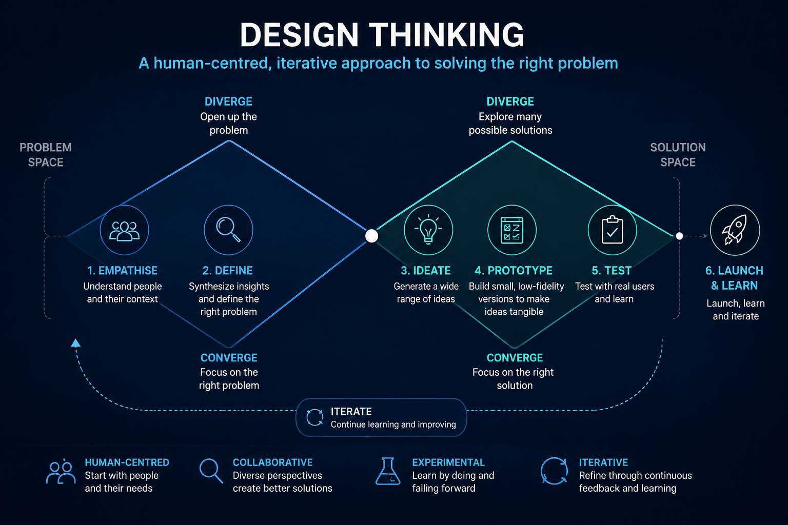
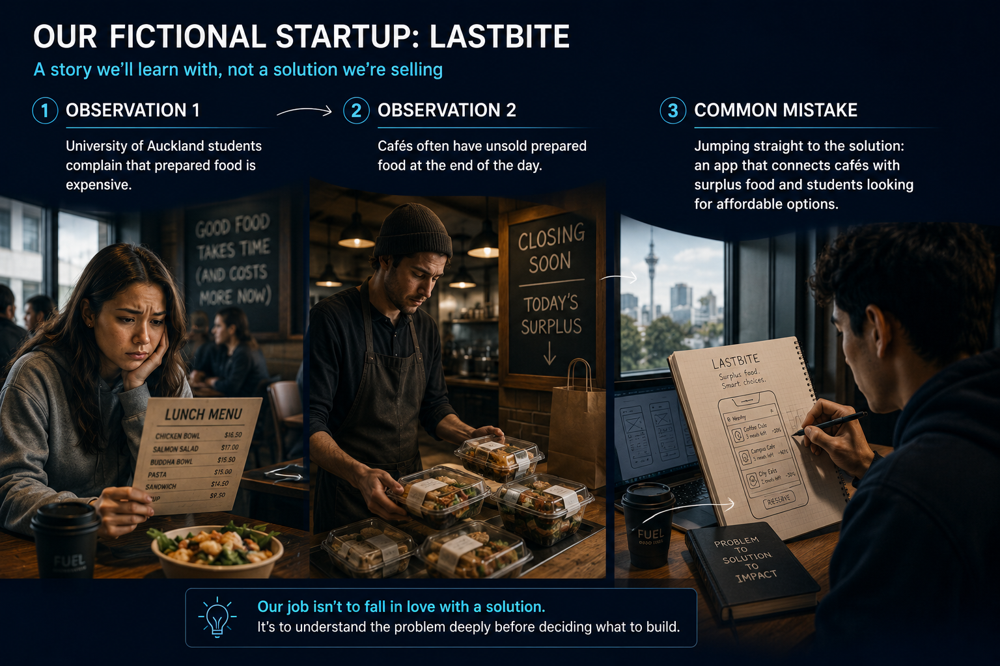
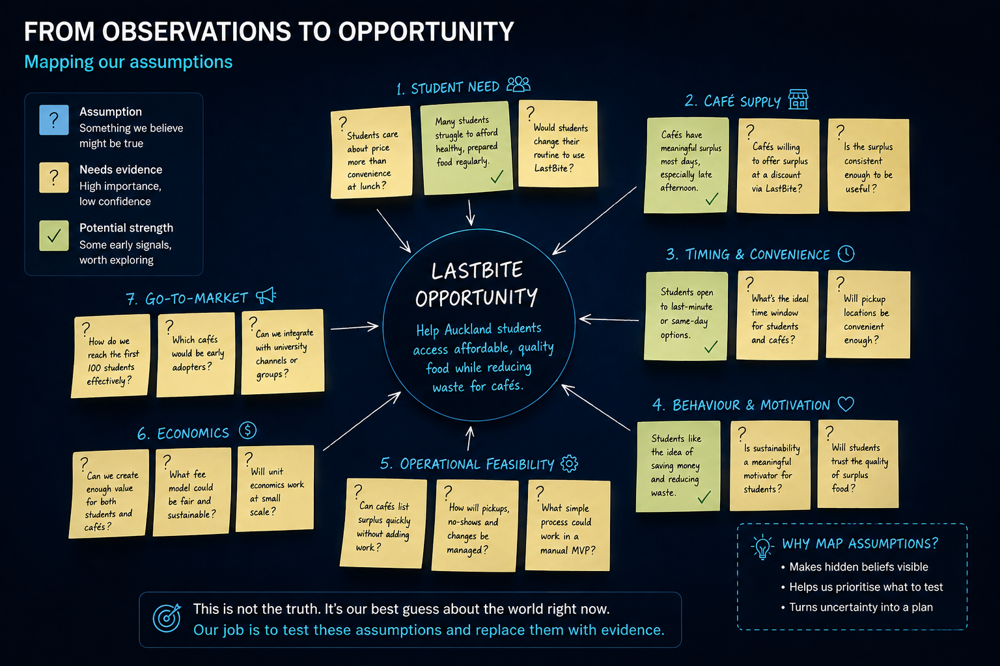
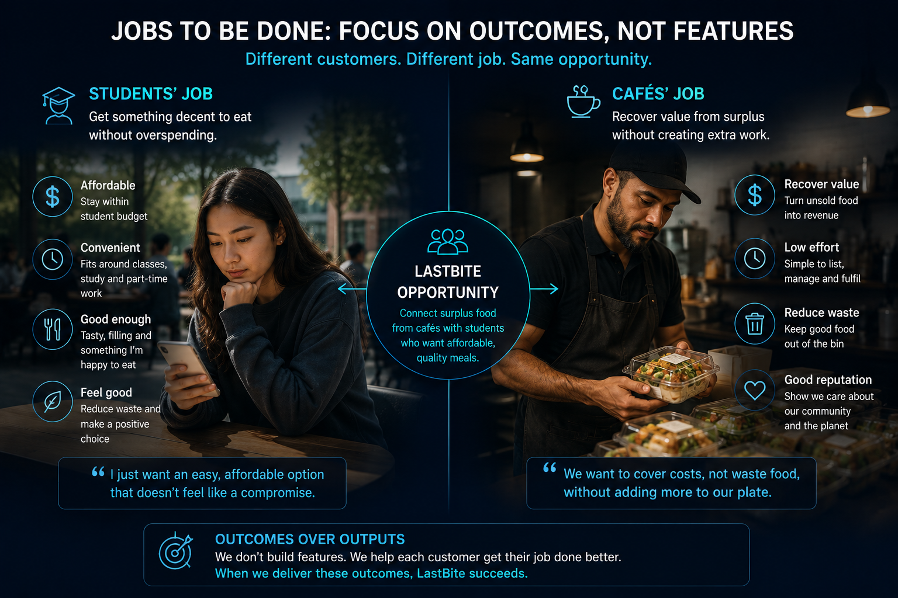
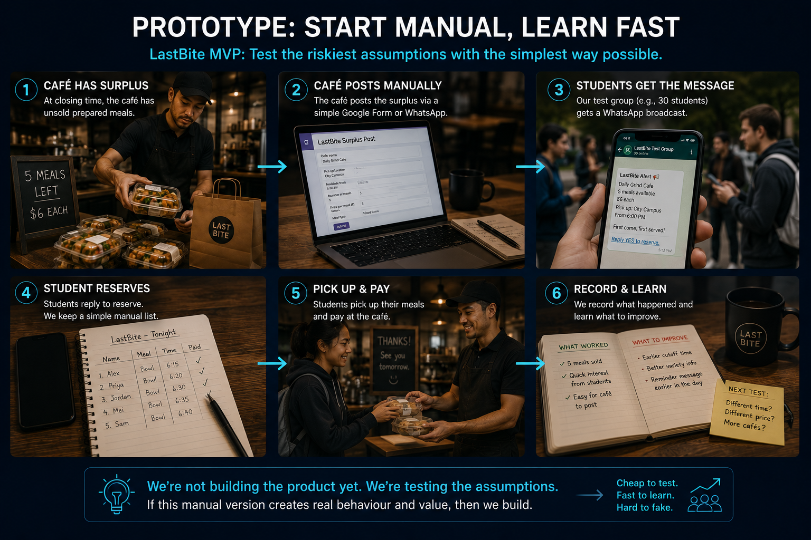
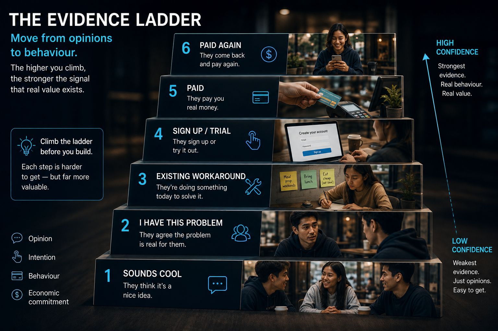

<div id="entreDeck" tabindex="0">
<style>
html,body{margin:0;width:100%;height:100%;background:#07111f}#entreDeck{background:#07111f;color:#f7f9fc;font-family:Inter,system-ui,sans-serif;padding:22px;min-height:100%;display:flex;align-items:center;justify-content:center}#entreDeck *{box-sizing:border-box}.frame{width:min(1120px,100%);margin:auto;background:linear-gradient(145deg,#102239,#081522);border:1px solid #29435e;border-radius:24px;overflow:hidden}.top{display:flex;align-items:center;padding:15px 20px;border-bottom:1px solid #29435e;gap:12px}.brand{font-weight:850;letter-spacing:.08em}.stage{margin-left:auto;padding:7px 11px;border-radius:999px;background:#102b45;border:1px solid #316287;color:#cfefff;font-size:12px;font-weight:800}.progress{height:4px;background:#13263a}.bar{height:100%;background:linear-gradient(90deg,#37d4ff,#4177ff);transition:width .2s}.spine{display:grid;grid-template-columns:repeat(6,1fr);gap:6px;padding:10px 14px;background:#091827;border-bottom:1px solid #29435e}.chip{font-size:11px;text-align:center;color:#69839f;padding:7px 3px;border-radius:8px}.chip.on{color:#fff;background:#12304b;border:1px solid #2b709b}.screen{min-height:470px;padding:48px 54px;display:flex;flex-direction:column;justify-content:center;position:relative;overflow:hidden}.screen:after{content:'';position:absolute;width:280px;height:280px;border-radius:50%;right:-120px;top:-120px;background:#1d9be8;opacity:.18}.eye{font-size:12px;text-transform:uppercase;letter-spacing:.18em;color:#39d5ff;font-weight:850;margin-bottom:16px}.screen h1{font-size:clamp(38px,6vw,72px);line-height:.98;letter-spacing:-.05em;margin:0;max-width:920px}.screen h2{font-size:clamp(28px,4vw,48px);line-height:1.05;margin:0;letter-spacing:-.04em}.sub{font-size:clamp(18px,2.2vw,26px);color:#bacadd;line-height:1.4;max-width:860px;margin:22px 0 0}.story{display:inline-block;margin-top:24px;padding:10px 14px;border:1px solid #315a7d;border-radius:999px;color:#d4e6f7;background:#12263b;font-weight:700}.story:has(>img.slideImage){display:block;margin:0;padding:0;border:0;border-radius:0;background:transparent;width:100%}.slideImage{display:block;width:100%;max-height:470px;object-fit:contain;background:#07111f}.slideImage.heroAsset{max-height:290px;margin-top:18px;border-radius:18px}.grid{display:grid;grid-template-columns:repeat(2,minmax(0,1fr));gap:13px;margin-top:24px}.card{border:1px solid #284c69;border-radius:16px;padding:18px;background:#102238}.card b{display:block;font-size:19px;margin-bottom:6px}.card span{color:#b3c5d6;line-height:1.45}.big{font-size:clamp(28px,4vw,48px);line-height:1.17;max-width:900px}.big strong{color:#39d5ff}.foot{display:flex;gap:9px;align-items:center;padding:13px 16px;border-top:1px solid #29435e;background:#081522;flex-wrap:wrap}.foot button{min-height:44px;padding:9px 14px;border-radius:11px;border:1px solid #345774;background:#10243a;color:#fff;cursor:pointer}.foot button.primary{background:linear-gradient(90deg,#1789c4,#3768e5)}.count{margin-left:auto;color:#91a6bd}.notes{display:none;border-top:1px solid #29435e;background:#0a1726;padding:18px}.notes.open{display:block}.notes h3{margin:0 0 8px}.notes p{color:#9fb2c7;margin:0 0 12px}.prompt{white-space:pre-wrap;border:1px solid #294c6b;background:#06101c;border-radius:12px;padding:14px;max-height:230px;overflow:auto;font:13px/1.5 ui-monospace,monospace;color:#dce9f7}.hint{font-size:11px;color:#758ca5;margin-top:8px}@media(max-width:760px){#entreDeck{padding:6px;align-items:flex-start}.frame{border-radius:16px}.screen{padding:34px 22px}.slideImage{max-height:360px}.slideImage.heroAsset{max-height:220px}.grid{grid-template-columns:1fr}.spine{grid-template-columns:repeat(3,1fr)}.count{width:100%;text-align:right;margin-left:0}}
</style>
<div class="frame"><div class="top"><div class="brand">AI × ENTREPRENEURSHIP</div><div class="stage" id="st"></div></div><div class="progress"><div class="bar" id="bar"></div></div><div class="spine" id="spine"></div><div id="stageBanner" style="padding:10px 18px;background:#0d2033;border-bottom:1px solid #29435e;color:#39d5ff;font-size:13px;font-weight:850;letter-spacing:.12em;text-transform:uppercase"></div><main class="screen" id="screen"></main><div class="foot"><button id="prev">Back</button><button class="primary" id="next">Next</button><button id="notesBtn">Notes</button><button id="overview">Overview</button><div class="count" id="count"></div></div><aside class="notes" id="notes"><h3 id="notesTitle">Speaker notes</h3><p id="note"></p><div class="prompt" id="prompt" tabindex="0"></div><div class="hint" id="promptHint"></div></aside></div>
<script>
(()=>{const root=document.getElementById('entreDeck');const stages=['Empathise','Define','Ideate','Prototype','Test','Launch & Learn'];const S=[
['Opening','University of Auckland Entrepreneurs Club','From problem to launch','AI-powered Design Thinking for entrepreneurs','','Frame this as a journey, not a list of AI tools.',''],
['Opening','The trap','','','The biggest startup risk is often not whether you can build it. It is whether you should build it.','AI can accelerate poor thinking as easily as good thinking.',''],
['Opening','Our operating system','Design Thinking is the spine.','AI is the accelerator. Evidence is the discipline.','Empathise → Define → Ideate → Prototype → Test → Launch & Learn','Explain where TAM, pricing, competitors and planning fit inside the process.',''],
['Opening','','','','','Use the diagram to explain divergence, convergence and iteration. The image carries the definition, so avoid repeating its labels verbatim.',''],
['Opening','How the prompts work','One conversation. One evolving evidence base.','The prompts only appear when there is a concrete piece of entrepreneurial work to do.','Run the sequence in the same AI chat • Keep a Venture Evidence Brief • Each action prompt inherits the last • Separate evidence from assumptions • Carry unresolved questions forward','Explain that the prompts are deliberately chained rather than standalone. Concept slides have speaker notes only; action slides add the next prompt in the workflow.',''],
['Empathise','','','','','Walk the audience left to right through the two observations, then pause on the common mistake. Stress that the app is a premature solution hypothesis, not the problem statement or validated opportunity.',''],
['Empathise','1. Empathise','Start with people, not ideas.','What problem is hiding inside those observations?','Behaviours • workarounds • pain points • triggers • trade-offs','This is the first action prompt. Initialise the Venture Evidence Brief from the two observations, then use it to plan discovery.','We have two starting observations: (1) Auckland university students often describe prepared food as expensive, and (2) cafés may have unsold prepared food near the end of the day. Treat both as hypotheses to investigate, not proven facts. Create a discovery plan that identifies the priority customer and stakeholder groups, the behaviours and existing workarounds we need to understand, the most important unknowns, and the evidence that would make us conclude there is no worthwhile problem here. Do not propose a product yet.'],
['Empathise','AI as research assistant','Widen the search space.','Look for recurring problems before committing to a solution.','Explore reviews, discussions, complaints and patterns. Treat the result as hypotheses.','Encourage source checking for factual research. This prompt should inherit the customer groups and unknowns identified in the discovery plan.','Using the customer groups, behaviours and unknowns already identified in our Venture Evidence Brief, conduct secondary research to widen the search space. Identify recurring frustrations, behaviours, complaints, workarounds and alternatives relevant to those exact groups. For every finding, label whether it is a sourced fact, an inference from sources, or a hypothesis, and state what still needs to be verified with real people.'],
['Empathise','','','','','Use the map to make the hidden assumptions visible. Emphasise that these are questions to test, not facts to defend.','Using the discovery plan and secondary research already captured in the Venture Evidence Brief, identify the assumptions that would have to be true for there to be a worthwhile opportunity connecting students seeking affordable prepared food with cafés that have surplus. Group them into customer, problem, timing, operational, economic, behavioural and market assumptions. Rank them by importance and evidence strength. Do not design the product yet.'],
['Empathise','Customer interviews','Ask about the past, not the imaginary future.','','Bad: “Would you use this?” Better: “Tell me about the last time this happened.”','Behaviour is stronger evidence than polite intent. Build the interview guide from the highest-risk assumptions in the brief.','Using the highest-priority, lowest-evidence assumptions in our Venture Evidence Brief, create a behaviour-based interview guide for the relevant student and café participants. Focus on real past behaviour, current workarounds, frequency, triggers, costs and trade-offs. For each question, state which assumption it tests and what answer would weaken that assumption.'],
['Empathise','After the interviews','AI can synthesise. You interpret.','','Themes • contradictions • workarounds • urgency • willingness to pay • unknowns','Mention anonymising sensitive interview data. This prompt assumes the student now pastes in the interview notes generated by real research.','Using the assumptions and interview guide already in our Venture Evidence Brief, analyse the anonymised interview notes I provide next. Separate direct evidence, repeated patterns, contradictions, inference and unanswered questions. For each material finding, state which prior assumption it strengthens, weakens or leaves unresolved. Do not invent quotes, counts or conclusions.'],
['Define','2. Define','What problem are we actually solving?','Narrow the customer, context, pain and alternative.','The evidence may reveal two linked problems: one for students and one for cafés.','Move from divergence to convergence.','Using only the evidence accumulated during Empathise, write up to five precise problem statements in the form: [customer] struggles to [job] when [context] because [pain/current alternative]. For each, cite the evidence already in the Venture Evidence Brief, score its evidence strength and commercial relevance, and recommend the best-supported problem to take forward.'],
['Define','','','','','Use the two sides to show that customers care about making progress, not about the product itself. Keep the technology secondary to the outcomes.','Using the problem statement selected in the previous step and the evidence already in the Venture Evidence Brief, build a Jobs-to-Be-Done analysis for the priority customer. Include functional, emotional and social jobs, triggers, anxieties, current alternatives, desired outcomes and switching barriers. Label anything not supported by evidence as a hypothesis.'],
['Define','Risk first','Find the assumption that can kill the business.','High importance + low evidence = test next.','Prioritise learning, not activity.','This bridges into market and model questions.','Using the selected problem statement, Jobs-to-Be-Done analysis and all evidence in the Venture Evidence Brief, rescore the remaining assumptions for business importance and evidence strength. Identify the high-importance, low-evidence assumptions and rank the next three learning priorities. Do not design experiments yet.'],
['Define','Market size','TAM / SAM / SOM are models, not magic numbers.','Use AI to build the logic. Verify the inputs.','Prefer bottom-up assumptions you can explain over impressive-looking precision.','Explain TAM, SAM and SOM simply.','Using the customer definition, geography, behaviours and problem scope already established in our Venture Evidence Brief, build a bottom-up TAM/SAM/SOM model. Reuse observed inputs where available, identify external data still required, show every formula, create conservative/base/optimistic cases, and then critique the model as a skeptical investor.'],
['Ideate','3. Ideate','Generate solutions, not just “an app.”','Diverge before you converge.','Marketplace • café SaaS • membership • university partnership • low-tech service','Show how cheap exploration has become. This is where LastBite becomes one possible solution among several.','Using the selected problem, Jobs-to-Be-Done analysis, market constraints and highest-risk assumptions in our Venture Evidence Brief, generate 20 materially different ways to solve the problem. Include software, service, marketplace, partnership and low-tech approaches. For each, identify who pays, which job it addresses, what existing evidence supports it and the biggest new assumption it introduces. Do not privilege the original app idea.'],
['Ideate','Competitors','“We have no competitors” is almost always wrong.','','Direct • indirect • substitutes • do nothing','Competitor research should answer why you should exist.','Using the customer job and strongest solution territories already in our Venture Evidence Brief, map direct competitors, indirect competitors, substitutes and do-nothing behaviour. Compare target customer, proposition, pricing, business model, distribution, strengths, weaknesses and complaints. Then reassess which of our solution territories still look differentiated.'],
['Prototype','','','','','Walk through the manual MVP as a learning system. The point is not that this is the product; the point is that it cheaply creates real behavioural evidence before an app exists.','Using the leading solution direction and the highest-priority, lowest-evidence assumption already in our Venture Evidence Brief, design five MVP experiments that test that assumption within seven days and under [budget]. Specify the prototype, participants, observed behaviour, success/failure threshold, cost and evidence strength. Recommend the experiment with the best learning per dollar.'],
['Prototype','Pricing','Pricing is a hypothesis.','Ask what pricing model to test, not what the answer is.','Commission • subscription • sponsorship • hybrid','Distinguish pricing model from price point.','Using the current solution direction, value proposition, competitive alternatives and behaviours already captured in our Venture Evidence Brief, generate six plausible pricing models. Compare payer, value metric, friction, incentives, predictability, complexity, margin impact and objections. Then propose three behavioural willingness-to-pay tests that can plug into the MVP experiment already chosen.'],
['Test','5. Test','Turn assumptions into experiments.','The startup is a collection of hypotheses.','“Students will buy between 3pm and 6pm.” “Cafés will join if it adds under five minutes of work.”','Concrete hypotheses make testing easier.','Using the current assumptions, selected prototype and pricing hypotheses in our Venture Evidence Brief, convert the venture into a ranked hypothesis backlog using: We believe [customer] will [behaviour] because [reason]. We will know when [measurable evidence]. For each hypothesis, include importance, current evidence strength, metric, pass/fail threshold and cheapest valid test.'],
['Test','','','','','Use the ladder to challenge the phrase “we validated the idea.” Ask the room where their current evidence sits and reinforce that behaviour becomes stronger as commitment rises.','Using the hypothesis backlog in our Venture Evidence Brief and the test results I provide next, place each piece of evidence on an evidence ladder from positive opinion through repeated paid behaviour. For every key assumption, state the strongest claim we can responsibly make, what we still cannot claim and what next test would move the evidence one rung higher.'],
['Test','Unit economics','A wanted product can still be a bad business.','Desirability + feasibility + viability.','CAC • LTV • margin • retention • payback','AI can model scenarios; evidence must ground inputs.','Using only the pricing, transaction, acquisition, retention and cost evidence already in our Venture Evidence Brief—or values explicitly labelled as assumptions—build a simple unit economics model covering revenue, variable costs, gross margin, CAC, retention, purchase frequency, LTV and payback. Create conservative/base/optimistic cases and identify the inputs most worth measuring next.'],
['Launch & Learn','6. Launch & Learn','Validation changes the question.','From “does anyone want this?” to “can we repeatedly acquire and retain them?”','Acquire → activate → retain → refer','This is the entrepreneurial extension beyond classic Design Thinking.','Using only the validated customer, problem, solution, pricing, testing and unit-economics evidence accumulated in our Venture Evidence Brief, design an initial go-to-market learning plan. Include positioning, acquisition, activation, retention, referral, partnerships and metrics. Prioritise five 30-day experiments and state which remaining uncertainty each one addresses.'],
['Launch & Learn','First 100 customers','Do things that teach you.','Early growth is about finding a repeatable channel.','Clubs • café partners • ambassadors • referrals','Keep LastBite concrete but the process reusable.','Using the target customer, positioning, GTM hypotheses and budget constraints already in our Venture Evidence Brief, generate 15 experiments to acquire the first 100 target users. Rank them by cost, speed, likely conversion, learning value, scalability and fit with what we already know. For the top five, give the exact first action, metric and decision threshold.'],
['Launch & Learn','Business planning','Write the plan after you have learned something.','A plan should summarise evidence, not decorate assumptions.','Customer evidence • market logic • positioning • pricing • GTM • economics • risks','Now AI can assemble validated pieces.','Using the complete Venture Evidence Brief as the sole factual foundation, draft a lean business plan covering customer, problem, market, competition, solution, pricing, GTM, operations, economics, milestones and risks. Clearly distinguish validated evidence, reasonable inference and untested assumptions, and do not silently change earlier decisions or numbers.'],
['Launch & Learn','Use AI well','Ask AI to attack your thinking.','Creation is useful. Critique is often more valuable.','Skeptical investor • competitor • customer • operator','Use role prompts for critique, not synthetic validation.','Using the full Venture Evidence Brief and the lean business plan just created, red-team the venture from four perspectives: skeptical investor, strongest competitor, demanding target customer and operations lead. For each, give three serious objections grounded in the existing brief, the evidence that would change their mind and the fastest valid test. Update rather than ignore any contradictions you uncover.'],
['Closing','The takeaway','','','AI generates possibilities. Evidence makes decisions. The founder owns the judgment.','End on learning speed, not tool count.','']
];let i=0;const screen=root.querySelector('#screen'),bar=root.querySelector('#bar'),st=root.querySelector('#st'),stageBanner=root.querySelector('#stageBanner'),count=root.querySelector('#count'),spine=root.querySelector('#spine'),notes=root.querySelector('#notes'),notesTitle=root.querySelector('#notesTitle'),note=root.querySelector('#note'),prompt=root.querySelector('#prompt'),promptHint=root.querySelector('#promptHint'),nb=root.querySelector('#notesBtn');function stageIdx(x){return stages.indexOf(x)}function stageLabel(x){const si=stageIdx(x);return si>=0?`Design Thinking · Stage ${si+1} of ${stages.length} · ${x}`:'Design Thinking Journey'}function priorActionCount(idx){let c=0;for(let j=0;j<idx;j++){if(S[j][6]&&S[j][6].trim())c++}return c}function chainPrompt(stage,p,idx){if(!p||!p.trim())return '';const first=priorActionCount(idx)===0;const start=first?`START THE VENTURE EVIDENCE BRIEF\n\nWe are beginning one continuous entrepreneurial workflow. Create and maintain a Venture Evidence Brief with:\n1. Venture / opportunity\n2. Target customers and stakeholders\n3. Observed evidence\n4. Problem / jobs to be done\n5. Assumptions and confidence\n6. Market sizing inputs and sources\n7. Competitors / substitutes\n8. Solution hypotheses\n9. Prototype / experiment results\n10. Pricing and business model\n11. Unit economics\n12. Go-to-market evidence\n13. Risks / unanswered questions\n14. Decisions and changes\n\nRules: distinguish evidence from inference and speculation; never treat AI output as customer validation; never silently overwrite earlier findings; flag contradictions; and preserve useful outputs for the next action prompt.`:`CONTINUE THE EXISTING VENTURE EVIDENCE BRIEF\n\nStart from the evidence, assumptions, decisions and unresolved questions produced by the previous ACTION prompt. Do not restart the analysis, repeat work unnecessarily or invent missing evidence. If this task changes an earlier conclusion, explain why.`;const end=`\n\nAFTER THIS ACTION\nUpdate the Venture Evidence Brief with only what this step adds or changes. Finish with a short CHANGE LOG:\n• What we learned\n• What changed\n• What remains uncertain\n• What the next action prompt should inherit`;return `${start}\n\nCURRENT DESIGN THINKING STAGE: ${stage}\n\nACTION\n${p}${end}`}function drawSpine(){const si=stageIdx(S[i][0]);spine.innerHTML=stages.map((x,j)=>`<div class="chip ${j===si?'on':''}">${j+1}. ${x}</div>`).join('')}function draw(){const s=S[i];const [stage,eye,title,sub,body,n,p]=s;let content=`<div class="eye">${eye}</div>`;if(title)content+=`<h1>${title}</h1>`;if(sub)content+=`<div class="sub">${sub}</div>`;if(body){if(body.includes('•'))content+=`<div class="grid">${body.split('•').map(x=>`<div class="card"><span>${x.trim()}</span></div>`).join('')}</div>`;else content+=`<div class="story">${body}</div>`}screen.innerHTML=content;bar.style.width=((i+1)/S.length*100)+'%';st.textContent=stageIdx(stage)>=0?`Stage ${stageIdx(stage)+1}: ${stage}`:'Design Thinking';stageBanner.textContent=stageLabel(stage);count.textContent=`${i+1} / ${S.length}`;note.textContent=n;const cp=chainPrompt(stage,p,i);const hasPrompt=!!cp;prompt.style.display=hasPrompt?'block':'none';promptHint.style.display=hasPrompt?'block':'none';prompt.textContent=cp;promptHint.textContent=hasPrompt?'Action prompt: run this in the same AI conversation as the previous action prompt. Each action reads and updates the Venture Evidence Brief.':'';notesTitle.textContent=hasPrompt?'Speaker notes + action prompt':'Speaker notes';nb.textContent=notes.classList.contains('open')?'Hide Notes':(hasPrompt?'Notes / Prompt':'Notes');drawSpine();root.querySelector('#prev').disabled=i===0;root.querySelector('#next').textContent=i===S.length-1?'Restart':'Next'}function move(d){if(d>0&&i===S.length-1)i=0;else i=Math.max(0,Math.min(S.length-1,i+d));draw()}root.querySelector('#prev').addEventListener('click',()=>move(-1));root.querySelector('#next').addEventListener('click',()=>move(1));nb.addEventListener('click',()=>{const o=notes.classList.toggle('open');const hasPrompt=!!chainPrompt(S[i][0],S[i][6],i);nb.textContent=o?'Hide Notes':(hasPrompt?'Notes / Prompt':'Notes')});root.querySelector('#overview').addEventListener('click',()=>{screen.innerHTML=`<div class="eye">Deck overview</div><h2>Design Thinking journey</h2><div class="grid">${stages.map((x,j)=>`<button class="card" data-go="${x}" type="button" style="color:white;text-align:left;cursor:pointer"><b>Stage ${j+1}: ${x}</b><span>${S.filter(s=>s[0]===x).length} slides</span></button>`).join('')}</div>`;screen.querySelectorAll('[data-go]').forEach(b=>b.addEventListener('click',()=>{const k=S.findIndex(s=>s[0]===b.dataset.go);if(k>=0){i=k;draw()}}));st.textContent='Overview';stageBanner.textContent='Design Thinking Journey · Overview'});root.addEventListener('keydown',e=>{if(e.key==='ArrowRight'||e.key==='PageDown'){e.preventDefault();move(1)}if(e.key==='ArrowLeft'||e.key==='PageUp'){e.preventDefault();move(-1)}if(e.key==='s'||e.key==='S'){e.preventDefault();nb.click()}});draw();})();
</script></div>
